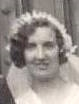
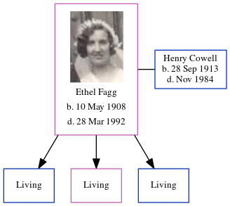

Ethel Maud Cowell (née Fagg) 1908 - 1992
[ Home ] | [ Calendar ] | [ Surnames Index ] | [ Errors ] | [ Family History ]Ethel Fagg, the wife of Henry Richard Stephen Cowell (the uncle of Nigel Horne), was born in Thanet, Kent, England on 10 May 19081,2,3,4 and. She married Henry (a general labourer with whom she had 3 surviving children Brian H, Mavis E and Alan Stephen) at Holy Trinity Church, Margate, Kent, England on 26 Oct 19356.
During her life, she was living at 3 Owens Place in Margate on 2 Apr 19117, at 22 Church Square in Margate on 29 Sept 19391, and at 41 Nash Road in Margate in 19658.
She died on 28 Mar 1992 at 61 Cornwall Gardens, Cliftonville, Kent3,5.
Citations
- 1939 Register - Findmypast (was the wife of the head of the household)
- England & Wales births 1837-2006 - Findmypast
- England & Wales deaths 1837-2007 - Findmypast
- Kent Marriages And Banns - Findmypast
- England & Wales Government Probate Death Index 1858-2019 - Findmypast
- England & Wales marriages 1837-2008 - Findmypast
- 1911 Census for England & Wales - Findmypast (was age 2 and the daughter of the head of the household)
- 1965 Kelly's Thanet Directory
Media
Henry Cowell - Ethel Fagg - marriage

Ethel Fagg

Ethel Maud Fagg - probate

1965 Kelly's Thanet Directory

1939 Register Transcription - TNA-R39-1755-1755D-017-27
England & Wales births 1837-2006 - BMD/B/1908/2/AZ/000199/353
England & Wales deaths 1837-2007 - BMD/D/1992/3/78921538
England & Wales marriages 1837-2008 - BMD/M/1935/4/AZ/000398/118
1911 Census for England & Wales - GBC/1911/RG14/04492/0731/5
1939 Register Transcription - TNA-R39-1755-1755D-017-26
Family Tree
Map
Generated by ged2site. Last updated on Jul 3, 2024
Known Issues
No records of living with anyone